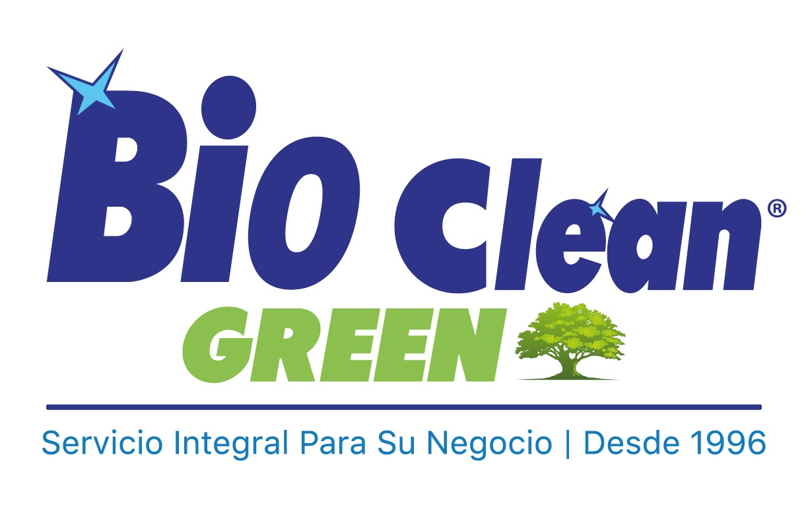

Bioclean Green Cozumel
Productos de limpieza con entrega a negocios y hogares en Cozumel, Quintana Roo.
ContáctanosQuiénes somos
Somos una empresa local de Cozumel. Surtimos pedidos a hoteles, restaurantes, comercios y hogares de la isla, con entrega directa y comprobante de cada entrega.
Catálogo
Consulta nuestro catálogo de productos 2025: higiénicos, limpieza de manos, bolsas, desechables, tapetes y más.
Ver catálogo 2025Contacto
- Domicilio
-
Calle 15 624, entre 30 Av y Francisco Mujica
Independencia, 77660 Cozumel, Q.R., México - Teléfono
- 987 103 1919
- Horario
- Lunes a viernes, 9:00 a 18:00